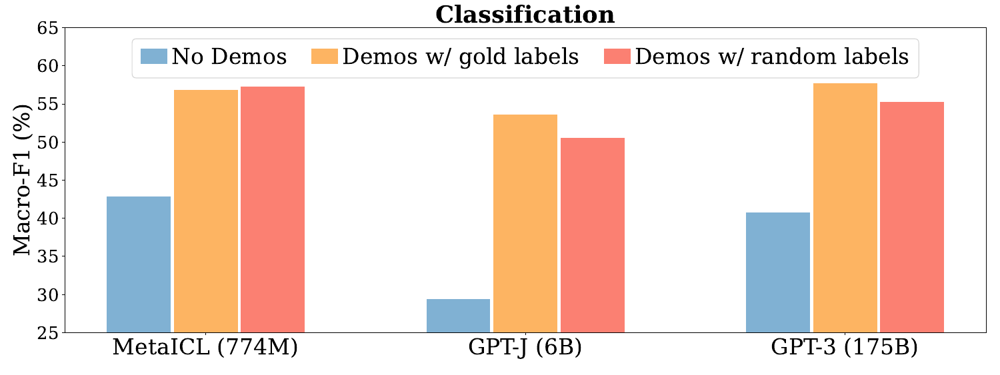
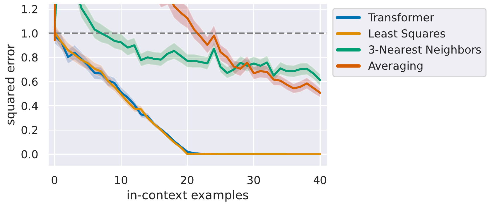
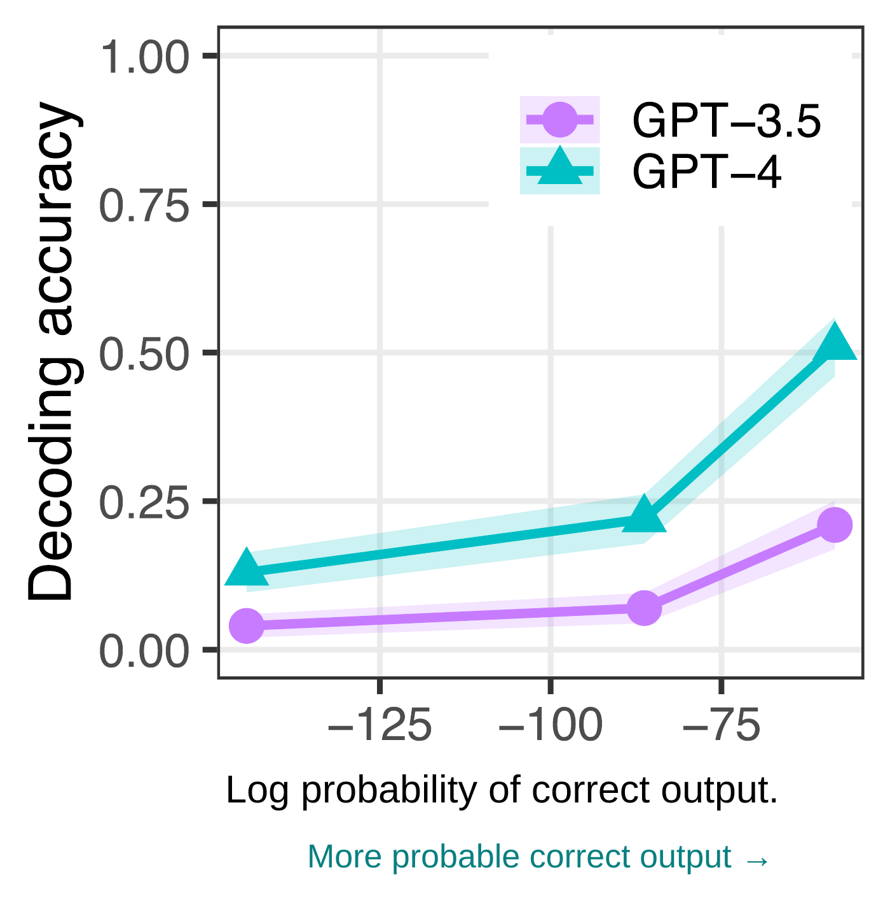

Part 4: Where does the “intelligence” in a language model actually come from?
Probabilistic Machine Learning
University of Virginia Sarvin Motamen
Fall 2026
The previous lecture explained how a transformer computes a next-token distribution. This lecture asks how learning to predict text leads to the capabilities of modern language models. We will connect pretraining to scaling, generation, and learning from examples in the context.
Today's Roadmap
How does next-token prediction lead to the capabilities—and limitations—of LLMs?
1
Pretraining
How do we train a transformer on text?
2
Scaling Laws
How do model size, data, and compute affect performance?
3
Emergent Capabilities
Why do some abilities appear suddenly?
4
Decoding
How do we turn token probabilities into text?
5
In-Context Learning
How can models adapt without weight updates?
6
Limitations
Why doesn't good text prediction guarantee correct answers?
About 1 minute, three builds. Start with the guiding question and topics 1–2: next-token training and how parameters, data, and compute influence performance. Next reveal topics 3–5: apparent emergence, decoding, and adaptation through context. Finally reveal topic 6: why good text prediction alone does not guarantee correct answers. This is an introductory roadmap; leave the existing section map and transitions unchanged.How does next-token prediction lead to the capabilities and limitations of language models? We first ask how to train a transformer on text, and how model size, training data, and compute affect performance.Then we examine why some abilities appear suddenly, how decoding turns token probabilities into text, and how models can adapt through context without weight updates.Finally, we ask why good text prediction does not guarantee correct answers.
The same visual slide map used by the Transformers lecture. The seven branches follow the planned lecture order. Every branch links to its section, with thumbnails of all completed content slides.We begin with the pretraining objective and the training process. Then we ask how model size, data, and computation affect prediction loss, and how task performance can appear to change suddenly. We examine how decoding selects outputs from the learned distribution. In-context learning is the main mathematical example: how can examples in a prompt change a prediction while the parameters stay fixed? We finish with limitations of pretraining and a transition to the next lecture.Brief section transition. Zoom from the outline into the first branch.We begin with how transformer predictions become maximum-likelihood training on a text corpus.
From Architecture to Training
A transformer with parameters $\theta$ maps a token prefix to a distribution over the next token:
\[p_\theta(w_t\mid w_{<t}).\]
The transformer architecture defines how input tokens are processed to predict the next token. How are its parameters learned?
Pretraining: learn $\theta$ from a large text corpus by predicting tokens from their preceding context.
How do we train a transformer on text, and what determines what it can learn and do?About 2 minutes. Connect to the transformer lecture without redrawing attention or the transformer block. Pretraining learns all trainable parameters, including token embeddings. The final box is the same model architecture with learned parameters. This is the first of the four requested section slides, not a separate lecture cover.We now know how a transformer turns a prefix into probabilities for the next token. Its architecture specifies that computation, but it does not specify useful values for the parameters. A newly initialized transformer has the same structure as a trained one. Where do the useful parameters come from?Pretraining learns the parameters from a large collection of text. At each position, the preceding tokens form the context and the next token is the prediction target. The transformer, the likelihood objective, and an optimizer together turn the corpus into parameter updates.The big-picture question is how we train a transformer on text, and what determines what it can learn and do. First we make the training process precise. Then we can ask what changes as we increase its scale.
The pretraining objective
The text supplies both the prefixes and the tokens the model should predict.
As in ordinary MLE, we maximize the probability of the observed training data. For language models, we report the average negative log-likelihood per token (nats/token).Position $t$About 2.5 minutes. The word tokens, vocabulary of five outcomes, and probabilities are illustrative, not measurements of a pretrained model. The start symbol is context only, not a target. The input and target rows are the same sequence shifted by one position; each prediction sees only the input prefix through its position. Position 3 intentionally gives the observed token sat probability 0.30 while slept has probability 0.50. Likelihood training uses the probability of sat, even though it is not the model's favorite. Drag across positions rather than deriving cross-entropy again. The corpus objective divides the total negative log-likelihood by the total number of valid predicted tokens, excluding padding. Averaging sequence sums instead divides by M: it equals the token-averaged loss times the mean sequence length, so both have the same minimizer for a fixed corpus. Averaging per-sequence token means would instead weight unequal-length sequences differently. All logarithms here are natural.Here is one training sequence, The cat sat followed by a period. The input and target rows are shifted by one token. The start symbol predicts The, The predicts cat, and the prefix The cat predicts sat. The data provide every target. The figure uses an illustrative vocabulary and probabilities. Move the position slider to inspect a conditional distribution and the loss assigned to its observed next token.For each sequence, we use the autoregressive negative log-likelihood from the earlier lectures. Over a corpus, sum all sequence losses and divide by the total number of predicted tokens. Averaging the sequence sums would divide by M instead: for a fixed corpus this only rescales the loss. The per-token form matches our validation-loss units. All positions use the same model parameters.This is the same maximum-likelihood principle we already studied. At position three the model prefers slept, but the observed token is sat. The loss uses the probability assigned to sat. Training raises the likelihood of the observed text; it does not replace the target with the model's preferred token.
Teacher Forcing
Training corpus: The cat sat .
Teacher forcing: During training, next-token predictions use the actual preceding tokens from the corpus, not the model's generated tokens.
About 1 minute. Continue the observed-token loss from the preceding slide. Both rows begin with The cat. The toy distribution gives slept probability 0.50 and sat 0.30, with the remaining 0.20 on unshown outcomes. Because sat is the observed target, the training loss uses 0.30 even though slept is more probable. The next training prefix comes from the corpus: The cat sat. No token is selected in training. In generation, the selected token is slept, so the next prefix is The cat slept. That can also be a valid continuation; the diagram does not label it an error. The green corpus arrow and amber selected-token arrow make the different input sources explicit. The example is static; no checkbox is used. Reveal the definition after explaining the diagram. Leave causal masking and exposure bias to the following slide.Both rows start with The cat. The model assigns probability point five to slept and point three to sat. In training, sat is the actual next token, so the loss uses point three. We do not select a training token: the corpus supplies the next prefix, The cat sat. In generation, suppose we select slept. The next prefix is then The cat slept. The green arrow follows the actual corpus token; the amber arrow follows the selected token.Teacher forcing means that training predictions use the actual preceding corpus tokens, rather than tokens generated by the model. That is the definition. Next we will separate why this is useful from the possible mismatch at generation time.
Why Teacher Forcing Matters
1. Known targets The corpus provides the target at every position, so we can calculate next-token prediction loss.
2. Parallel training The entire sequence is known. Causal masking lets the transformer predict all positions in parallel.
3. Exposure bias Generation uses the model's own earlier outputs. Unfamiliar generated prefixes can make later predictions less reliable.
Teacher forcing uses the same next-token prediction loss introduced earlier.
About 2 minutes. Each row is the causal view at a different position of one known input sequence, not an independent generation process or a separate transformer call. The prefix The predicts target cat; The cat predicts sat; The cat sat predicts the period. The start-token prediction of The is omitted for clarity. All three predictions are computed together in a single masked transformer forward pass. Reveal the parallel-training point to highlight all three arrows simultaneously. Causal masking prevents each position from seeing its target or later tokens. Parallel refers to token positions within the pass, not to transformer layers or optimizer updates. Generation still builds an unknown continuation sequentially with fixed weights. Exposure bias is a possible reliability issue for unfamiliar generated prefixes, not a claim that every different continuation is wrong. Reveal the final point and takeaway together, then move naturally to the pretraining pipeline's forward pass, loss and parameter update.The training sequence already supplies the targets. The predicts cat, The cat predicts sat, and The cat sat predicts the period. Each target lets us calculate a next-token prediction loss. The rows show three positions in the same sequence.Because that whole sequence is known, a causal mask lets one transformer forward pass compute all three predictions in parallel. The three arrows appear together. Each position can use its preceding tokens while the mask hides its target and the later tokens. We are not generating the three rows in sequence or making three separate forward passes.During generation, the model instead conditions on its own earlier outputs. Unfamiliar generated prefixes can make later predictions less reliable; a different but valid continuation is not automatically an error. Teacher forcing is the standard input setup for autoregressive maximum-likelihood training, not a separate loss. The next slide puts these inputs, predictions and losses into the complete pretraining pipeline.
The Pretraining Pipeline
The training targets are automatically obtained from the text itself, without manually labeled examples.
Training text: The cat sat.
Input: The cat
Target next token: sat
The target is the next token in the same training sequence.
For each minibatch, the transformer predicts next-token probabilities, computes cross-entropy against the observed tokens, and updates its parameters using backpropagation.
The loss averages over valid predicted tokens; padding is excluded.
Training repeats over many minibatches. Each new minibatch uses the updated parameters.
After training, the learned parameters define a pretrained language model.
How do model size, training data, and compute affect performance?
About 2.5 minutes, in exactly three states. First, distinguish corpus preparation from the repeated optimizer loop. Collect and clean the text, tokenize it, and organize sequences into minibatches. In the word-level example The cat sat., the prefix The cat supplies the target sat from the same text; no manual next-token annotation is needed. The preparation phase is shown once conceptually; implementations may stream tokenization or form batches on demand. Second, replace the left explanation and highlight the three training operations. With causal masking and teacher forcing, the forward pass predicts all valid token positions, average cross-entropy compares with the actual next tokens, and backpropagation computes gradients for an optimizer update. The displayed equation is ordinary gradient descent; AdamW uses a different update rule. Third, replace the explanation again and emphasize the return arrow. The loop returns to the forward pass with the next minibatch and updated parameters, not to corpus collection. Batch selection is repeated even though corpus preparation is separate. After many such steps we obtain the pretrained model. Finish with the question on model size, training data and compute to introduce scaling laws.First, collect and clean the text, then tokenize it and organize minibatches. This is self-supervised learning: the training targets come from the text itself. In The cat sat, the input prefix The cat has the observed next token sat. The target is already in the training sequence.For each minibatch, the transformer predicts next-token probabilities at every valid position. We calculate average cross-entropy against the actual next tokens, then backpropagate and use an optimizer to update the parameters. The equation illustrates ordinary gradient descent; AdamW and other optimizers use different update rules.Repeat these training steps with the next minibatch, using the updated parameters each time. The loop returns to prediction, not to collecting the corpus. After many minibatches, the result is a pretrained language model. How do model size, training data, and compute affect performance? That is the question for scaling laws.Brief section transition. Entering zooms out from the preceding slide to the full outline. Advance once to zoom into the next section, then advance to its first content slide.We have the next-token objective and the pretraining pipeline.How should model size, data and compute grow together? We next examine empirical scaling laws.
What determines pretraining performance?
We can run the same pretraining procedure at different scales. What limits the resulting predictor?
$N$
number of model parameters
$D$
number of training tokens processed
$C$
training compute, in FLOPs
$L$
validation cross-entropy per token
Under a compute budget, should we increase $N$, $D$, or both?
2 minutes. Compare loss per valid token with a fixed tokenizer and evaluation distribution. D counts processed token presentations; repeating the same data need not give the same benefit as new information. The left schematic increases N at fixed D; the right increases D at fixed N. The y-axes share a linear scale. Each horizontal decade has equal width, and dotted minor gridlines at 2 through 9 times the decade base get progressively closer together toward the next power of ten. These are separate resource comparisons, not fixed-compute experiments or measured training runs. Both curves retain residual loss. Reveal the compute-budget question to introduce balancing N and D.We can run the same pretraining procedure at different scales. N counts parameters, D counts training tokens, C is training compute, and L is held-out cross-entropy per token. On the left, increase model size while keeping training data fixed. On the right, increase training data while keeping model size fixed. Both schematic curves decrease with diminishing returns. Equal-width decades and the increasingly close minor gridlines make the logarithmic horizontal scales explicit. The vertical loss scale is linear and shared. These are separate effects, not experiments at fixed compute.Both larger models and more training data improve prediction performance. Since both require computation, how should we balance them? Under a compute budget, should we increase N, D, or both? Empirical scaling laws give one way to approach this allocation.
Discovering empirical scaling laws
Researchers train models at different scales and measure their validation losses.
Increasing either $N$ or $D$ reduces its contribution to validation loss.
Schematic power-law illustration; scaling-law parameters are fitted empirically. Hoffmann et al. (2022), §3.
2.5 minutes, exactly three states. First, researchers train models at different scales and measure held-out losses. The upper graph is an illustrative contribution f(N), not measured validation loss L. Model size is in relative units. Second, retain the first graph and reveal the same function on log–log axes. Both use f(N)=N^(-0.35), with A=1 and 1≤N≤100. The lower graph shows transformed coordinates: log10 N runs from 0 to 2 and log10 f(N) from 0 to -0.7. Light, solid major gridlines mark the labeled logarithmic coordinates; the line has slope -0.35 and intercept zero. The example exponent 0.35 is illustrative, distinct from the next slide's fitted Chinchilla exponent 0.34. A straight trend on log–log axes motivates fitting power laws to measurements; it is not a derivation from first principles. Third, reveal the empirical additive decomposition, component definitions and takeaway. The extra-loss contributions are positive and decrease as the corresponding resource increases. This decomposition is a modeling assumption, not a universal theorem. The fitted floor depends on the training family, tokenizer and evaluation distribution. Transition to Hoffmann et al.'s specific Chinchilla fit.Researchers train models at different scales and measure their validation losses. The ordinary-axis plot illustrates a model-size contribution to excess loss. Increasing model size reduces that contribution, with diminishing returns. This is a schematic curve rather than experimental measurements.Now view exactly the same function and range on logarithmic axes. In this illustration A is one and alpha is point three five. Taking base-ten logarithms gives log f of N equals log A minus alpha log N, so the transformed curve is a straight line with slope minus point three five. This motivates fitting power laws to measured scaling trends, rather than deriving them from first principles.To model both resources, one empirical approximation adds a fitted floor, a model-size contribution, and a training-data contribution. The two extra-loss terms are positive contributions due to limited model size and limited training data. Increasing either N or D reduces its own contribution to validation loss. Next we will examine the specific fitted law from the Chinchilla study.
2.5 minutes. Start at N=1B, D=10B: the terms are 1.69000, 0.35396, 0.65092, and total loss is 2.69488. The next reveal doubles N to 2B at fixed D=10B: the model contribution falls to 0.27964 (factor 0.79004), and total loss is 2.62056, a decrease of 2.7577%. The next reveal changes only the plot: reset N to 1B and double D to 20B. The data contribution falls to 0.53609 (factor 0.82359), and total loss is 2.58005, a decrease of 4.2610% from the initial baseline. The final reveal retains this plot and shows the existing clarification about the 21% model-term reduction. Each stacked total contains exactly the three component contributions. Sliders remain available: model comparisons use N=1B at the current D as reference, and data comparisons use D=10B at the current N. The floor remains fixed. These coefficients and the fitted floor apply to this training family; do not treat them as universal or extrapolate to different tokenizers or training recipes.The Chinchilla study fitted a floor and two inverse-power contributions. The exponents are approximately point three four for model size and point two eight for training tokens. They are estimates from that training family, not theoretical constants.Doubling the parameter count multiplies its own contribution by about point seven nine. It does not reduce the entire validation loss by twenty-one percent. The plot now doubles N from one to two billion while holding D at ten billion tokens. Only the model contribution shrinks; total loss falls by about two point seven six percent. The sliders remain available for exploration.Now reset N to one billion and double D from ten to twenty billion training tokens. Only the data contribution shrinks. The total loss becomes about two point five eight, a decrease of about four point two six percent from the initial configuration. The text stays in place while the plot changes.The fit is useful for allocating resources within a comparable training setup. It is not a universal numerical formula for every language model.
2–3 minutes. Begin with the fixed training-compute constraint. Retain the small-N, large-N and optimal-N plot states, with all compact marginal-balance and optimal compute-scaling formulas appearing together on the first plot reveal. The later plot reveals change only the selected point, slider and row until the final takeaway appears. Small N uses 100M parameters; Large N uses 251.2B; the last step moves to the exact fitted optimum N≈11.5908B. Each case moves the logarithmic slider and one point along the same fitted curve, recalculating D=C/(6N), loss and the single table row. The first two choices are red and labeled Selected; the last is green and labeled Optimal. No separate fixed green point or second table row is drawn. At the last step, moving the slider away from the optimum turns the point and row red again, so an arbitrary interactive choice is never mislabeled optimal. The optimum is computed from the published fit, not the rounded display values. Inference cost is excluded. The optimum formulas follow by substituting D=C/(6N) into the fitted loss and setting its derivative with respect to log N to zero. The resulting powers are beta/(alpha+beta)≈0.4516 for N* and alpha/(alpha+beta)≈0.5484 for D*. The full derivation remains in the optional appendix after the lecture summary.We fix a training-compute budget. For a dense transformer, training compute is approximately six N D. Increasing the number of parameters therefore forces us to reduce the number of training tokens. Inference cost is excluded.First, consider a small model with one hundred million parameters. The slider and red selected point move to the left side of the curve. Even with many training tokens, the model is capacity-limited. The single table row shows this choice and its fitted loss. Minimizing the fitted loss balances the exponent-weighted marginal gains; the two loss terms need not be equal. The resulting optimal parameter and token counts scale as the displayed powers of compute.Now increase model size to about two hundred fifty-one billion parameters. The same red point and slider move to the right. This model has greater capacity, but the fixed budget leaves only about forty billion training tokens. The model is data-limited. The already displayed scaling relationship gives optimal N proportional to compute to the power beta over alpha plus beta.Finally, move to the fitted optimum: approximately eleven point six billion parameters and eight hundred sixty-three billion training tokens. The point and single table row turn green and are labeled Optimal. Optimal D follows from C divided by six N star; its compute exponent is alpha over alpha plus beta. For this fit the two exponents are approximately point four five and point five five. At fixed training compute, the best model balances parameter count and training tokens.
Why Chinchilla mattered
THE QUESTION
Could a smaller model outperform a larger one using the same training-compute budget?
THE EXPERIMENT
DeepMind compared Chinchilla with its earlier, much larger model, Gopher, using different allocations of comparable training compute.
THE FINDING
Chinchilla performed better despite having far fewer parameters.
If validation loss improves smoothly, why do some abilities appear to improve suddenly?
3 minutes, exactly two states. First show THE QUESTION, THE EXPERIMENT and both parameter and training-token charts: Gopher (DeepMind, 2021) was a competitive 280B-parameter model, while Chinchilla used 70B parameters. The training-data comparison shows 300B versus 1,400B, about 4.7 times as many, at comparable training compute. Then reveal THE FINDING, 5-shot MMLU accuracy and the red transition question. The duplicate comparison table and below-chart takeaway are removed; all three charts retain their previous values, scales, labels and coordinates. Use the requested 60.0% for Gopher and 67.5% for Chinchilla, the headline Chinchilla score in the paper's abstract; Table 6 and §4.2.2 instead print 67.6%, a 0.1-percentage-point reporting discrepancy. The full 0–100% accuracy axis avoids exaggerating the difference. All charts have separate zero-based scales, equal widths and equal bar thicknesses. This experiment supports allocating compute between model size and training data, not a universal guarantee that smaller models always win. The rounded N,D counts give 6ND proxies of 5.04e23 and 5.88e23 FLOPs; actual accounting and training recipes differ.Gopher was DeepMind's competitive large language model from 2021. Chinchilla tested a different allocation of a comparable training-compute budget. The first chart shows two hundred eighty billion versus seventy billion parameters: Chinchilla was four times smaller. The second chart shows the other side of the allocation: Gopher processed three hundred billion training tokens and Chinchilla one point four trillion, about four point seven times as many. Training compute was comparable, not numerically identical.The third chart compares five-shot MMLU accuracy on a full zero-to-one-hundred-percent scale: about sixty percent for Gopher and sixty-seven point five percent for Chinchilla, using the paper's headline score. The smaller model achieved better performance after substantially more training. This shows why compute allocation matters. If validation loss improves smoothly, why do some abilities appear to improve suddenly?Brief section transition. Entering zooms out from the preceding slide to the full outline. Advance once to zoom into the next section, then advance to its first content slide.Scaling can improve average prediction loss smoothly.Why can task performance appear to jump? We next examine emergence and evaluation metrics.
What is emergence?
DEFINITION
An ability is called emergent when performance remains near random for smaller models, then rises sharply at larger scales.
Reported examples: Multi-digit arithmetic, Persian question answering, and word unscrambling.
CENTRAL QUESTION
Does this mean the underlying ability suddenly appears?
Arithmetic: ~0% exact-answer accuracy. Persian QA: 25% (four choices).
About 2 minutes, two builds. Build 1: operational definition and both original experimental panels, including the full model legend, baseline explanations, and concise list of reported examples. Figure 2A aggregates a BIG-Bench modified-arithmetic task with 3-digit addition/subtraction and 2-digit multiplication, evaluated with 2-shot prompting. Its x-axis is logarithmic training compute, not a fixed-compute comparison. Original model-family colors and markers are retained. These are reproduced panels from Wei et al. (2022), Figure 2, with full titles and light major grids added at the original PDF tick positions. Gridlines occur only on background pixels; original axes, points, curves, colors, and baselines are unchanged. The arithmetic random-guessing baseline is approximately 0% exact-answer accuracy; Persian QA has a 25% baseline because it has four answer choices. No minor gridlines are added. Build 2: ask whether the underlying capability must itself change suddenly. This definition concerns observed benchmark behavior and is not proof of a discontinuity in internal computation.Wei and colleagues reported benchmark abilities whose performance stays near random over smaller model scales and then rises sharply. The first original panel shows multi-digit arithmetic. Each point is a different model, and the horizontal axis is logarithmic training computation. The major vertical gridlines mark powers of ten from ten to the eighteenth to ten to the twenty-fourth. The dashed pink random-guessing baseline is approximately zero percent exact-answer accuracy. GPT-3 and LaMDA improve sharply at the larger measured scales. The second original panel shows Persian question answering. It includes PaLM as well as GPT-3 and LaMDA, with the dashed pink baseline at twenty-five percent: random guessing among four answer choices. The paper also reports word unscrambling. These are observations of benchmark performance across particular models and training setups.Does a sharp change in the benchmark score mean that the underlying ability itself suddenly appears? Arithmetic gives us a useful way to investigate what the evaluation rule can do.
All-or-nothing evaluation
Why might arithmetic accuracy remain near zero even as a model gradually improves?
Suppose a task requires $\ell$ independent steps, each correct with probability $p$, and every step must be correct.
\[P(\text{success})=p^\ell.\]
Even when individual steps improve gradually, requiring every step to be correct can make whole-task accuracy rise sharply.
A possible explanation for arithmetic emergence, not necessarily for Persian QA or other tasks.
About 2.5 minutes, four builds. Build 1 motivates the arithmetic question and states the assumptions and equation. Build 2 reveals the interactive graph at ell=3. The marked per-step probabilities are p=0.90, 0.95, and 0.98. Dashed gray is per-step correctness p; solid rose is whole-task success p^ell. Build 3 animates ell from 3 to 40 over 2.5 seconds, updating the slider, curve, probability markers, and exponent together. The PDF shows the two endpoints as separate build states. At ell=3 the marked probabilities are about 0.729, 0.857, and 0.941; at ell=40 they are about 0.015, 0.129, and 0.446. Manual slider exploration remains available from 1 to 50. Build 4 reveals the existing explanation and arithmetic-specific takeaway. For every finite ell this curve is continuous, not a true discontinuity; limited measurement resolution and sparse model scales can make a steep change look abrupt. Real LLM errors may be dependent, unequal in probability, and sometimes recoverable. This toy mechanism does not establish that all reported emergence is a metric effect.Why might arithmetic accuracy remain near zero even as a model gradually improves? Suppose the task requires ell independent steps, each correct with probability p, and the entire answer is counted correct only if every step is correct. Whole-task success is p to the power ell.The graph starts with three required steps. The marked per-step correctness probabilities are point nine, point nine five, and point nine eight. The dashed line is per-step correctness and the solid curve is whole-task success. With three steps, the marked success probabilities are about seventy-three, eighty-six, and ninety-four percent.Now increase the number of required steps from three to forty. The slider moves with the curve and the marked success probabilities. At forty steps, the corresponding success probabilities are about one point five, twelve point nine, and forty-four point six percent. Requiring every step to be correct can sharply reduce complete-task accuracy even when individual steps are fairly reliable. The slider remains available for exploration.This is an illustrative model, not a fitted account of actual LLM reasoning. It assumes independent steps, equal probabilities and no recovery. All-or-nothing scoring can turn gradual improvements into apparent emergence, but this mechanism does not explain every reported case.
Is emergence real?
THE CHALLENGE
Schaeffer et al. (2023) re-evaluated reported emergent tasks using different performance metrics.
THE FINDING
Apparent jumps in exact-match accuracy became smoother improvements under token edit distance.
THE TAKEAWAY
A sudden change in benchmark scores does not necessarily imply a sudden change in underlying capabilities.
Paper plots −edit distance: toward 0 means fewer edits.
Even with a fixed model, how we generate its outputs changes its observed behavior.
Related arithmetic experiment; not the same outputs shown in Wei et al.'s Figure 2. Within this comparison, the outputs are fixed and rescored.
About 2.5 minutes, two builds. These are the actual experimental four-digit-addition plots in Figure 3, right column, of Schaeffer et al. (2023), not the mathematical-model panels in its left column. Build 1: all content except the red transition sentence, including the challenge, both plots, finding, takeaway, complete legend, and sign explanation. Original plot rectangles are reproduced unchanged; tiny surrounding labels are enlarged using exact published tick positions. Every curve and shaded band is preserved. Target string lengths 1–5 use the original light-to-dark color ordering. Solid and dashed curves are temperatures zero and one. The original x-axis is logarithmic GPT-3 model parameters, with 10^9, 10^10, and 10^11 ticks. The original second y-axis is NEGATIVE token edit distance; movement toward zero is better because the underlying edit count decreases. Edit distance counts token insertions, deletions, and substitutions needed to match the target; a mean edit distance provides partial credit. These are related arithmetic experiments with the InstructGPT/GPT-3 family, not a rescore of the specific outputs in Wei et al. Figure 2. Build 2: reveal only the red transition sentence about decoding. This evidence shows strong metric dependence in some reported emergence; it does not conclusively disprove every emergent capability or identify the models' internal algorithms.Schaeffer and colleagues tested the metric explanation empirically on related arithmetic tasks. This is their four-digit-addition experiment, not a rescore of the specific outputs shown by Wei and colleagues. Exact-match accuracy shows apparently sharp gains for longer target strings as model size increases. The horizontal axis remains logarithmic. Now evaluate the same outputs from this experiment with token edit distance, which gives partial credit for nearly correct answers. The trend is smoother. The original paper plots negative edit distance, so upward movement toward zero means fewer edits and better performance. Colors indicate target length, while solid and dashed lines show temperatures zero and one. The finding is that some apparent jumps depend strongly on the chosen metric. A sudden change in a benchmark score need not imply a sudden change in underlying capability, and these results do not rule out every emergent ability.Even with a fixed model, how we generate its outputs changes its observed behavior. Next we examine decoding.Brief section transition. Entering zooms out from the preceding slide to the full outline. Advance once to zoom into the next section, then advance to its first content slide.Task performance depends on how we evaluate the generated outputs.It also depends on how we choose those outputs. Next: decoding and typicality.
Greedy decoding vs. beam search
Once an LLM has learned next-token probabilities, how should we use them to generate text?
Greedy decoding: select the highest-probability token at each step.
Beam search: keep the $b$ highest-scoring partial sequences at each level; expand and prune at each step.
Beam search is approximate: pruning can miss the globally most probable sequence.
The locally most probable token need not lead to the most probable complete sequence.
Illustrative fixed-length example. $P(Z\mid A)=0.45$ and $P(W\mid B)=0.05$ complete the conditional distributions.
About 2 minutes, three builds. Initially show local greedy selection: A has probability 0.6, B has probability 0.4, and X has conditional probability 0.55 versus 0.45 for Z after A. Greedy decoding therefore selects X. Build 2 reveals B's continuations: Y has probability 0.95 and W has probability 0.05. Beam width 2 retains both first-token prefixes, expands them, and compares four complete two-token sequences. Build 3 shows AX=0.33, AZ=0.27, BY=0.38, BW=0.02, summing to 1. In this tiny fixed-length tree beam width 2 happens to find the global maximum BY, but that is not a general guarantee. Sequence probability multiplies conditional probabilities; a beam ranks by those products or equivalently summed log probabilities. No length penalties or variable stopping decisions are involved.Pretraining gives next-token probabilities. How should we turn them into text? Greedy decoding chooses A because point six is greater than point four. After A, X has probability point five five, greater than point four five for Z, so greedy decoding selects X. All sequences in this example have exactly two tokens.Beam search keeps several promising prefixes. A beam of width two retains both A and B. Expanding B reveals a high-probability continuation Y, with conditional probability point nine five. Its other branch has probability point zero five, so this is a normalized probability tree.The sequence probabilities are products: AX has probability point three three, while BY has probability point three eight. The locally best first token did not lead to the most probable complete sequence. Beam search finds BY here, but in a larger tree its pruning can miss the global optimum.
Temperature sampling
Sample from a rescaled version of the same model's next-token distribution.
$0<T<1$: sharper; high-probability tokens become more likely.
$T>1$: flatter; greater sampling diversity.
$T\to0^+$: approaches greedy selection when the highest logit is unique.
Temperature controls how concentrated the sampling distribution is.
Temperature $T$
Exact illustrative softmax with fixed logits $(\log0.5,\log0.3,\log0.2)$. Temperature changes the decoder, not the learned parameters.
About 2 minutes, three builds. The initial distribution at T=1 is (0.5,0.3,0.2). Build 2 moves to T=0.5, giving approximately (0.658,0.237,0.105). Build 3 moves to T=2, giving approximately (0.415,0.322,0.263). All probabilities normalize to 1. The slider remains available from 0.05 to 2.5; neural weights and original logits remain fixed. A unique maximal logit receives limiting probability 1 as T approaches zero from above; tied maxima would share the limiting mass. Diversity does not imply factual correctness.Sampling draws the next token from a distribution. Temperature rescales the logits before softmax. At temperature one, we recover the original model distribution: point five, point three, and point two for our three illustrative tokens. The logits and learned neural parameters stay fixed.A temperature below one sharpens the distribution. At point five, the most probable token becomes substantially more likely. Use the slider to explore this change while checking that the probabilities still sum to one.A temperature above one flattens the distribution and increases diversity. As temperature approaches zero, a unique highest logit takes all the probability mass, approaching greedy selection. Temperature controls concentration, not whether the generated answer is true.
Top-k and nucleus sampling
Restrict which tokens are eligible for sampling.
Top-k: keep the $k$ highest-probability tokens. Set the rest to zero, renormalize, and sample.
Nucleus (top-p): sort tokens; keep the smallest set with cumulative probability at least $p$. Renormalize and sample.
A threshold of $0.60$ retains $0.40+0.25=0.65$, not exactly $0.60$.
Top-k fixes the number of candidates; top-p adapts the number to the distribution.
Temperature rescales probabilities; truncation removes candidates. They can be combined.
About 2 minutes, three builds. Build 1 shows top-k with k=3 on probabilities (0.40,0.25,0.15,0.10,0.06,0.04). It retains original mass 0.80 and samples from (0.5,0.3125,0.1875,0,0,0). Build 2 switches to nucleus sampling with threshold 0.60: the smallest qualifying prefix has two tokens and mass 0.65; cumulative sums appear beneath the bars. The checkbox switches methods, and k and p sliders permit exploration. Build 3 states the fixed-count/adaptive-count distinction and the different role of temperature. The threshold is reached or exceeded, not matched exactly. No probability ties occur here; a practical implementation needs a tie convention. Neither truncation rule exactly samples from a formal information-theoretic typical set.Top-k keeps a fixed number of the most probable tokens. Here the first three retain eighty percent of the original probability mass. Excluded tokens become ineligible; the remaining probabilities are renormalized before sampling.Nucleus sampling instead chooses enough high-probability tokens to reach a threshold. For point six, the first token is insufficient, but the first two reach point six five. The cumulative row shows why the set stops there. Switch methods and adjust k or p to compare the retained sets and sampling probabilities.Top-k fixes the candidate count; top-p adapts it to the distribution. Temperature and truncation can be combined, but they do different things: one changes concentration, while the other excludes candidates.
Typicality: most probable vs. representative
100 independent coin flips, with $P(H)=0.9$. Let $K$ count tails.
Most probable individual sequence: 100 heads.
Representative draws: approximately 90 heads and 10 tails.
The most probable individual sequence is not necessarily a representative sample from the model's distribution.
Typical per-symbol information is near the entropy $H_2(0.9)\approx0.469$ bits.
This motivates stochastic decoding; it does not prove greedy decoding always produces poor text.
Exact IID coin calculation. $P(K=10)$ is the probability of an event containing many sequences, not one sequence. The formal typical-set statement is asymptotic.
About 2.5 minutes, three builds. Initially show the all-heads individual sequence and its probability 0.9^100≈2.656e-5. Build 2 adds one fixed arrangement of 90 heads and 10 tails: its individual probability is 0.9^90×0.1^10≈7.618e-15. There are choose(100,10)≈1.731e13 such arrangements, whose total event probability is approximately 0.131865. The displayed mixed grid is one illustrative arrangement, not a claimed random sample. Build 3 connects mode versus mass to information theory and language generation. For IID sequences the formal typical-set criterion concerns per-symbol information near H2(0.9)≈0.469 bits; the exact K=10 event is not itself the complete formal typical set. Natural language is not IID, and this analogy neither proves greedy text is always poor nor makes stochastic outputs correct.Consider one hundred independent coin flips with heads probability point nine. The most probable individual sequence is all heads. Its probability is point nine to the one hundred, about two point six six times ten to the minus five.A representative draw instead has roughly ninety heads and ten tails. This particular arrangement is much less probable, but there are more than seventeen trillion arrangements with exactly ten tails. Their probabilities add to about point one three two. One sequence and an event containing many sequences are different probability objects.This is the information-theoretic distinction between a mode and typical behavior. Typical per-symbol information is near entropy. It helps explain why stochastic decoding can be useful, but it does not prove greedy decoding always gives poor language or that a representative sample is factually correct.
Is there a best decoding strategy?
Holtzman et al. (2020), Figure 3: original phrases
Shared prompt topic: young whales stranded in Western Australia.
Beam search, $b=16$ · repetition
“more than 50 per cent in the past year” … “more than 50 per cent in the past year” The continuation repeats this phrasing.
Pure sampling · incoherence
“umidauda” — an invented word in a drifting continuation.
Temperature, $T=0.9$ · incoherence remains
“packed” — part of an implausible description of one whale inside another.
Top-k, $k=640$ · can veer off topic
“Pumping Station” — an unrelated topic replaces the whale story.
Nucleus, $p=0.95$ · better balance here, still imperfect
“feed their calves” — stays closer to the whale topic here, but the full output still drifts and makes errors.
Shi et al. (2024): task dependence
Results depended on task, model, settings, and evaluation objective.
Task
Choices to evaluate
Open-ended writing
Temperature / top-p sampling
Translation / constraints
Beam search / task-specific decoding
Factual / structured
Low temperature / deterministic; verify facts
Math reasoning
Generate multiple solutions; verify or compare answers.
Contextual guidance; evaluate on the actual task.
There is no universally best decoding method. The right strategy depends on whether we prioritize diversity, coherence, correctness, or computational cost.
Decoding selects an output. What changes when the prompt supplies examples?
About 2.5 minutes, three builds. Build 1 presents the original common prompt and short original phrases from beam search and pure sampling in Holtzman Figure 3. Build 2 adds original temperature, top-k and nucleus excerpts, preserving the settings and quoted wording, with the original blue/red highlight identities. Ellipses mark omitted text; explanatory descriptions are paraphrases, not replacement model outputs. These are selected phrases from illustrative generations in the 2020 paper, not new measurements or complete outputs. In the paper's wider open-ended experiments nucleus balanced quality/diversity well; its example still drifts from whales to birds and contains errors, so do not call it universally best or factually reliable. Build 3 adds Shi et al. (2024) and the contextual task table. Their tuned LLM evaluations found task/model dependence; for unaligned Llama2, deterministic methods were often stronger on closed-ended tasks, while open-ended results favored other methods. The size of decoding differences also varied with model size and deployment settings. Their study is not a proof of one permanent winner for all present or future models. The task table synthesizes contextual choices, not a claim every listed combination was directly ranked in their experiments. Multiple-candidate verification is mentioned only as a possible task-specific inference approach. Transition to ICL: the decoder selects from a conditional distribution, while demonstrations in the prompt change that distribution with fixed neural weights.Holtzman and colleagues compared decoding methods for open-ended generation. These short original phrases come from their Figure 3, all continuing the same whale prompt; the adjacent descriptions paraphrase the failure cases. Beam search repeats phrases, while pure sampling produces an incoherent continuation. The blue and red colors retain the original highlight identities.Temperature and top-k also have failure cases at these settings. Nucleus sampling offered a better quality-diversity balance in their experiments, but even this output contains errors. These examples come from 2020 and do not establish a universal ranking for modern language models.Shi and colleagues later compared many decoders across LLMs, tasks and settings. Their results reinforce that the best choice depends on what we evaluate and which model we use. The table lists contextual approaches to test, not guaranteed winners. Diversity, coherence, correctness and computation are different objectives. Next we ask how demonstrations in the prompt change the conditional distribution itself.Brief section transition. Entering zooms out from the preceding slide to the full outline. Advance once to zoom into the next section, then advance to its first content slide.Decoding selects outputs from the model's conditional probabilities.How can examples in the context change those probabilities while neural weights stay fixed?
What Is In-Context Learning?
Examples in the prompt provide information about the task.
Loved it. → POS Hated it. → NEG A delightful film. → ?
Zero-shot: no demonstrations. Few-shot: examples in the prompt.
About 2 minutes. Main idea: Brown et al. (2020), §1–2 and Figs. 1.1–1.2, made GPT-3's task adaptation through text demonstrations striking at scale. Build 1 shows an intended sentiment answer, not an actual model run. Zero-shot can still contain an instruction; it simply contains no demonstrations. Build 2 writes the same model as F_theta and identifies the ordered examples D_k, query x_* and output y-hat_*. F_theta is the pretrained language model used for prediction, not a separately trained sentiment classifier. Build 3 highlights fixed neural weights. Hidden activations and conditional predictions change; ordinary inference does not run a weight update. Contrast fine-tuning only at this level, without introducing its algorithms. Brown evaluated GPT-3 on tasks without task-specific gradient updates, while also documenting limitations. Spoken transition: “But why would a model trained only to predict the next token develop the ability to learn from examples?”GPT-3 showed how a language model could use demonstrations supplied as text. Here the examples suggest sentiment classification, and the intended answer is POS. Zero-shot means no demonstrations; few-shot means examples in the prompt.The examples D k and new input x star enter the same pretrained transformer F theta. It produces the output y hat star. This is the pretrained model being used to predict, rather than a new task-specific classifier.In-context learning changes the input while theta remains fixed. But why would a model trained only to predict the next token develop this ability?
About 2.5 minutes. Build 1 adapts Xie et al.'s Figure 1: tokens within a pretraining document share a concept, such as biographical text. Our newly written biography and name-to-nationality examples preserve that idea without reproducing the paper's full figure. Build 2 uses the general mutual-information identity for the same next-token random variable, with finite entropies. It quantifies an expected reduction in uncertainty when conditioning on earlier tokens; it does not say every particular prompt helps a learned model. Riechers et al., arXiv:2505.18373v2 (2025 preprint), §2 Eqs. (1–3), study cross-entropy under the training sequence distribution and the entropy attained by an exact distributional predictor. Monotonicity across positions additionally uses stationarity; it is not a claim about arbitrary shifted prompts. Build 3 connects a shared document concept to a task shared across demonstrations. Xie et al. analyze a well-specified mixture of HMMs and an exact pretraining-distribution predictor, with regularity and distinguishability assumptions in §2.1, Condition 1 and Theorem 1. These explanations connect ordinary next-token pretraining with context use, while leaving general GPT few-shot task learning open. Transition: “Let's see how observations can reveal a hidden parameter and change predictions in a simple Bayesian model.”Text is not a sequence of unrelated tokens. A document can share a hidden topic or concept. Earlier biographical text helps predict what is likely to come next, so next-token training rewards using that structure.Mutual information measures how much earlier tokens can reduce expected uncertainty about the next token. Riechers and colleagues formalize in-distribution context-dependent learning under next-token pretraining. This is an average relationship, not a promise that any particular prompt improves a model.Xie and colleagues connect the shared concept within a document to a task shared across demonstrations. Their theory uses a stylized mixture of hidden Markov models. It does not prove arbitrary few-shot learning in a real GPT model. Let us make the statistical intuition concrete with a coin.
Learning from Context: A Bayesian Example
One unknown coin bias per sequence
\[\Theta\sim\operatorname{Beta}(1,1)\]
Before any flips, what probability of heads would we predict?
The inference rule stays fixed. The observations change the posterior and prediction.
Heads $h$Tails $t$
Controls explore other contexts; the worked example is HHTH.
Context can change predictions by providing evidence about an unknown underlying parameter or task.
Exact Beta–Bernoulli toy model, motivated by Xie et al. (2022). This is not evidence that a real GPT computes Beta posteriors.
About 2.5 minutes. Each sequence has one latent heads probability capital Theta, with conditionally IID Bernoulli flips and a uniform Beta(1,1) prior. Theta is not the neural parameter vector theta. Build 1 displays the uniform density and asks for the prior predictive, which is 1/2. Build 2 adds HHTH: h=3 and t=1, giving Beta(4,2), with density 20 Theta^3(1−Theta). Build 3 marks the posterior mean 2/3 and the next-heads predictive. The posterior mode is 3/4, which is not the predictive. The controls use Beta(1+h,1+t) and predictive (1+h)/(2+h+t); the left worked example stays explicitly HHTH. A corpus containing sequences from different latent biases would make earlier flips useful for next-symbol prediction. A neural predictor might approximate that rule across contexts with fixed weights. This exact conjugate calculation is our pedagogical example, not a result reported by Xie et al. or proof of GPT's internal mechanism. Transition: “So far, examples seem useful because they tell us the correct relationship. But a surprising experiment challenged that intuition.”Suppose each sequence comes from a coin with an unknown bias. A uniform prior puts equal density on all biases. Before any observations, the next-heads probability is one half.Now observe heads, heads, tails, heads. The posterior is Beta four two. The same inference rule incorporates the observations as evidence about the shared bias.The predictive probability is the posterior mean, two thirds. A next-token predictor exposed to many such sequences might learn to exploit this evidence. This exact Bayesian toy model does not prove that GPT computes Beta posteriors. But do demonstrations always need to give correct labels?
Do Demonstrations Need Correct Labels?
Correct labels
Loved it. → POS Hated it. → NEG
Incorrect labels
Loved it. → NEG Hated it. → POS
Illustration: swapped labels. The experiment uses randomly sampled labels.
Should performance drop dramatically?
Min et al.: a surprisingly small decline

Figure 1, top panel. Classification macro-F1, channel scoring. The paper also studies multiple-choice tasks.
Examples also reveal input distribution, output labels, and task format.
Examples can help a model identify what to do without necessarily teaching it a new input-output rule.
About 2.5 minutes. Build 1 contrasts correct labels with a fully swapped two-example illustration. Do not call that illustration the paper's random-label intervention: Min et al. independently sample labels from the label space, so some randomized labels remain correct. Ask whether performance should collapse if demonstrations teach the mapping. Build 2 shows the unchanged classification panel from published Figure 1, PDF page 1: macro-F1, three models, channel scoring, the GPT-3-evaluation subset. The second Figure 1 panel reports multiple-choice accuracy, which is not displayed here. Both panels use the paper's six-dataset subset in aggregate. §3 uses 16 demonstrations; §4 gives the broader comparisons and conditions, and §5 ablates input distribution, label space and format. MetaICL is a meta-trained model, while GPT-J and GPT-3 are distinct base models; this panel does not isolate a pure pretraining mechanism. Build 3 interprets the result as evidence that demonstrations do more than teach a correct mapping. The small declines in these studied tasks do not establish that correctness never matters or that every model ignores labels. Transition: “This suggests we need to distinguish two different meanings of learning from examples.”If demonstrations teach the input-output mapping, wrong labels ought to be damaging. These swapped sentiment examples illustrate the question. The actual study randomly sampled demonstration labels, rather than systematically reversing every label.Here is Min and colleagues' original classification result. On these tasks and scoring settings, randomized demonstration labels cause a comparatively small decline. The paper also studies multiple-choice tasks. This is a task-dependent empirical result.Demonstrations can reveal the input distribution, the possible labels, and the expected format. They may identify a task the model already knows, even when individual mappings are unreliable. That motivates separating task recognition from task learning.
Task Recognition vs. Task Learning
Task recognition
Identify a familiar task.
cat → chat dog → chien house → maison
The examples identify English-to-French translation. Apply a skill acquired during pretraining.
Task learning
Infer a relationship from examples.
1 → 7 2 → 10 3 → 13
\[f(x)=3x+4\]
One possible rule gives $f(3)=13$.
Examples can help an LLM recognize a familiar task or infer a new relationship.
About 2.5 minutes. Build 1 illustrates task recognition: the examples suggest applying translation knowledge already acquired during pretraining. Build 2 illustrates a candidate rule inferred from demonstrations, f(x)=3x+4. Its answer 13 is not uniquely identified by two observations; inductive bias resolves ambiguity. An LLM might also recognize a familiar arithmetic pattern, so this toy example is not an experimental identification of its mechanism. Build 3 summarizes the two ways that examples can help. Pan et al. §2 and Fig. 1 operationalize recognition using RANDOM labels and learning using ABSTRACT labels, which replace familiar labels by symbols. §3–4 compare GPT-3, LLaMA and OPT classification tasks; their evidence indicates both contributions, with different effects of scale and demonstration count. These interventions are operational probes, not proof of mutually exclusive neural modules. The contrast helps explain Min et al.'s results while preserving the possibility of learning new mappings. Transition: “Can a transformer genuinely learn an unfamiliar function from examples? Researchers designed controlled experiments to test this.”The translation examples can tell a pretrained model which familiar skill to apply. That is task recognition: identifying the intended task using examples.A different prompt suggests a possible numerical rule, three x plus four. Inferring a new mapping would be task learning.Examples can help an LLM recognize a familiar task or infer a new relationship. To test learning an unfamiliar function more directly, we next turn to a controlled synthetic experiment.
Can Transformers Learn New Functions?
Controlled experiment: Train one transformer across many synthetic functions, then test on unseen functions.
Many tasks, one trained predictor
Sample a new coefficient vector $w$.
Generate examples: $y_i=w^\top x_i$.
Predict a new query from its context.
Repeat across functions during training.
\[\hat y_*=F_\theta(\mathcal D_k,x_*)\]
Test: unseen functions, fixed $\theta$.
Transformer errors track least squares here.

Garg et al., Figure 2. $d=20$; $w,x_i,x_*\sim\mathcal N(0,I_d)$ independently. Squared error divided by $d$. 1,280 prompts; original 90% bootstrap intervals.
When trained across a family of tasks, transformers can perform statistical estimation on previously unseen functions.
About 2.5 minutes. Start with the visible distinction: Garg et al. deliberately train a GPT-2-family decoder from scratch on synthetic function prompts. This is a capability experiment, not a reconstruction of how general-purpose GPT pretraining produced ICL. §2 trains on predictions over prompt prefixes across many sampled tasks. §3 independently samples w and inputs from a standard Gaussian in d=20 and uses noiseless linear targets. Build 2 shows original Figure 2, with every curve and band preserved: normalized squared error versus number of in-context examples. Least squares uses the minimum-norm solution, including fewer than d examples. The figure averages 1,280 prompts with 90% confidence intervals from 1,000 bootstrap trials. Build 3 emphasizes estimator-like performance on new functions while keeping transformer weights fixed. Matching errors establishes behavior in this task family, not that arbitrary GPT models internally compute OLS. We omit OLS derivations because students already know them. Transition: “Transformers can behave like learning algorithms. But how could attention actually implement such computations?”Unlike ordinary GPT pretraining, Garg and colleagues deliberately trained transformers on synthetic function-learning tasks. Each prompt comes from a sampled linear function. Training repeats across functions; testing uses unseen functions while transformer weights remain fixed.The original plot shows prediction error as the number of in-context examples grows. The transformer tracks least squares, while the simpler baselines have higher error. The task has twenty input dimensions and independently sampled Gaussian coefficients and inputs.This is evidence that transformers can acquire a reusable statistical prediction procedure. It is not proof that a general-purpose GPT model computes ordinary least squares internally. How might an attention computation implement a learning step?
Attention as Implicit Gradient Descent
One gradient step for linear regression with scalar outputs, starting at $w_0=0$:
About 3 minutes. Build 1 recalls the result of one full-batch GD step on L(w)=(1/(2k)) sum_i(y_i−w^T x_i)^2, starting from w_0=0. The gradient gives w_1=(eta/k) sum_i y_i x_i, and the displayed prediction follows by multiplying by x_*. This scalar, zero-initialized specialization is pedagogical. Build 2 maps query x_*, context keys x_i, and scaled values eta*y_i/k to an unnormalized linear-attention weighted sum. Build 3 shows original von Oswald et al. Figure 2's left training-loss panel. We select this empirical comparison instead of Figure 1's broad conceptual illustration so students can see a trained single linear-attention layer approach the GD reference. Proposition 1 is an exact construction with a single head, paired (x_i,y_i) tokens, context-only keys/values, specific projection matrices, residual target-coordinate updates and an output readout. §3 separately tests learned behavior on controlled regression. Neither the proof nor that experiment establishes GD in ordinary softmax GPTs. Akyürek et al. §3, Theorems 1–2, supply separate GD and ridge-update constructions and §4 studies learned behavior. Omit the complete matrix construction. Transition: “Do we know which of these mechanisms explains ICL in actual LLMs?”For zero-initialized linear regression with scalar outputs, one gradient step produces this prediction. Each observed target is weighted by an inner product between its input and the query.That weighted-sum structure can be implemented by unnormalized linear attention: compare query and keys, weight the corresponding values, then add. This is a specific attention computation, rather than a universal identity for softmax attention.The published panel shows a trained linear-attention layer approaching the gradient-descent reference on controlled regression. Von Oswald and colleagues also give an exact construction under specified assumptions. This shows what such a fixed transformer can implement, not the mechanism of every GPT model.
Where Do We Stand in 2026?
Overlapping research perspectives, not a proven neural architecture or mandatory pipeline.
Well supported
Context changes predictions without weight updates.
Task recognition and statistical inference can contribute to ICL.
Controlled transformers can implement learning-like computations.
Still unresolved
Which mechanisms dominate in modern LLMs?
How reliably does ICL generalize to unfamiliar tasks?
How well do controlled theoretical results explain real LLMs?
ICL can involve task recognition, statistical inference, and learning-like computations—all with fixed pretrained weights.
About 2.5 minutes. Build 1 synthesizes complementary perspectives: task recognition (Min et al. §4–5; Pan et al. §2–4), statistical inference (Xie et al. §2–3; Riechers et al. §2), and estimator/optimization computations (Garg et al. §3; von Oswald et al. Prop. 1 and §3; Akyürek et al. §3–4). The diagram is a conceptual summary, not three proven internal modules or a mandatory sequence. Build 2 summarizes support with scope. Riechers et al. is the verified 2025 arXiv preprint, concerning in-distribution next-token loss. Akata et al. is published at AISTATS 2026 (PMLR 300): §3.1 and §4.1, Figs. 2–3, examine GP-generated continuous functions in 1–4 dimensions, including Qwen-3 models and model-family comparisons; curves depend on kernels and dimensionality and often approach the GP baseline. §4.2 and Fig. 4 study inductive biases. GP-like predictions do not prove an internal GP implementation. Build 3 discusses unresolved transfer. De Wynter is published at ICLR 2026: §3 gives a formal framework in which ICL counts as learning, while §4 tests four models on nine verifiable formal tasks. The paper reports brittle OOD generalization as the test distribution moves away from the demonstrations. These results are not a universal negative theorem about natural-language ICL. The recent studies support context-dependent capabilities and reveal limits, rather than settling one mechanism for all production LLMs. Transition: “The context can adapt a predictor, but its pretraining distribution still shapes what it knows and how it generalizes. What limitations follow from learning from finite text?”By October twenty twenty-six, several perspectives contribute to the picture. Examples can identify a familiar task, reveal hidden statistical structure, or support computations resembling a learning algorithm. These perspectives can overlap.Context changes predictions without weight updates. Task recognition and statistical inference can contribute to in-context learning. Controlled transformers can implement learning-like computations.Which mechanisms dominate in modern LLMs? How reliably does in-context learning generalize to unfamiliar tasks? How well do controlled theoretical results explain real LLMs? In-context learning can involve task recognition, statistical inference, and learning-like computations, all with fixed pretrained weights. We now turn to the limitations of learning from finite text.Brief section transition. Entering zooms out from the preceding slide to the full outline. Advance once to zoom into the next section, then advance to its first content slide.The Bayesian example illustrates adaptation through context with a fixed inference rule.What can pretraining still fail to learn or retrieve? We now examine its limitations.
How Much Probability Mass Have We Never Seen?
We've observed 1,000 samples. How much probability should we assign to symbols we've never seen?
Good–Turing estimates unseen mass using symbols observed exactly once.
In a discrete IID sampling model, let $n$ be the number of observations and $N_1$ the number of symbols observed exactly once.
\[\widehat P(\text{next symbol was unseen})=\frac{N_1}{n}.\]
Statistical insight: Many symbols appearing only once suggest substantial unseen probability mass.
LLM implication: Kalai and Vempala (2024) establish a lower bound on hallucination rates for calibrated language models, related to the Good–Turing estimate of unseen probability mass.
3 minutes. The frequency table accounts for 1000 draws: 120*1+80*2+60*3+54*10. The unseen mass sums the true probabilities of all unobserved symbols; it is not the probability of one chosen unseen fact. The classic estimate uses the singleton fraction. Text tokens and facts are not generally IID. Kalai and Vempala obtain hallucination results for arbitrary facts under a specified calibration condition and additional assumptions; do not make a universal inevitability claim for all models or systematic facts.We've observed one thousand samples. How much probability should we assign to symbols we've never seen? Good–Turing estimates this unseen probability mass using the number of symbols observed exactly once.Good–Turing uses the fraction of singleton observations to estimate that missing mass. With one hundred twenty singletons in one thousand draws, the estimate is twelve percent.Many symbols appearing only once suggest substantial unseen probability mass. Kalai and Vempala establish a lower bound on hallucination rates for calibrated language models, related to the Good–Turing estimate of unseen probability mass. This does not make unseen probability mass an LLM hallucination rate.
The reversal curse
A model can learn a forward relationship yet fail to answer the equivalent reverse question.
Fictional fact: Mira Vale is the composer of Silver Lanterns.
Forward: “What did Mira Vale compose?” → Silver Lanterns
Reverse: “Who composed Silver Lanterns?” → Mira Vale
Original finding: Learning a relationship in one direction does not guarantee retrieving it in reverse.
Can we fix it? Reverse training and improved representations can reduce this problem, but no universal solution has been established.
2.5–3 minutes. Assume a unique composer; arrows show correct answers, not model responses. Original controlled experiments fine-tuned GPT-3/Llama-1 on invented identities. The chart uses the separate historical GPT-4 celebrity study (§2.2): parents of 1,000 IMDb celebrities yielded 1,573 pairs (79%); reverse queries retrieved the original celebrity for 33% of those pairs, counting ≥1 success in ten samples (temperature 1). The denominators/protocols differ. Unknown pretraining data make this suggestive, prompt-dependent evidence, not a controlled causal test or current GPT-4 score. These are §2.2 rates, not Figure 5's different summary. Golovneva et al. (COLM 2024) improve reversal with forward/reversed-text training that preserves entities or segments. Ma et al. (ICML 2026) add identity-bridge examples (A → A), with theoretical results for a simplified transformer and empirical gains on tested tasks. Wang & Sun (ICLR 2026; preprint 2025) investigate inconsistent/entangled concept representations and report gains using a JEPA-based design and memory layers. The mitigation results are setup-dependent; systematic binding with less human scaffolding remains a challenge. No universal solution follows. Autoregressive factorization alone is not an impossibility theorem for reverse retrieval.Suppose a model learns that Mira Vale is the composer of Silver Lanterns. Retrieving the work from the name does not guarantee retrieving the name from the work, even though the two questions express the same unique relationship.In the original paper's historical GPT-4 celebrity study, the reported forward rate was seventy-nine percent and reverse retrieval was thirty-three percent. The reverse test used pairs first obtained in the forward direction and allowed ten attempts. These are historical, prompt-dependent results, not current GPT-4 performance.Learning in one direction does not guarantee reverse retrieval. Can we fix it? Reverse training and improved representations can reduce this problem, but no universal solution has been established.
Why Do LLMs Prefer Familiar Answers?
ROT13 shifts each letter 13 positions in the alphabet (A ↔ N, B ↔ O).
Gur png fng ba gur dhnfne. Correct: “The cat sat on the quasar.”
ROT13 decoding is deterministic: there is exactly one correct answer, regardless of how natural it sounds.
Bayesian interpretation
\[p(y\mid x)\propto p(x\mid y)\,p(y).\]
$p(y)$: preference for familiar outputs. $p(x\mid y)$: task-related evidence.
Can we fix it?Prompting and targeted fine-tuning can reduce this bias, but no universal solution exists (Zhang et al., 2025).
Historical experimental results · McCoy et al. (2024)

GPT-4:51% for high-probability outputs versus 13% for low-probability outputs.
2.5–3 minutes. ROT13 is its own inverse; punctuation and spaces remain unchanged. The full ROT13 example is constructed, not a model output. The original published panel is cropped from PNAS 121(41), e2322420121, page 5. Its data, curves, ticks, legend and uncertainty bands are unchanged. Only the x-axis title is clarified; an annotation points toward more probable correct outputs. The reported GPT-4 high/low accuracy comparison is 51%/13%. These experiments used gpt-4-0613 and gpt-3.5-turbo-0613 at temperature 0, with 100 examples per condition. Output probabilities were estimated with GPT-2; the horizontal coordinate is not the evaluated model's confidence in its answer. High-probability stimuli came from Global Voices, medium-probability stimuli replaced words, and low-probability stimuli shuffled the latter. This is a historical result for these tasks and prompts. Introduce the Bayesian interpretation only after the evidence. This is a Bayesian interpretation, not an explicit computation of separate prior and likelihood factors during transformer decoding. Here x is the cipher input and y a candidate plaintext. The factors illustrate how familiarity can interact with imperfect task evidence; transformers do not explicitly compute this decomposition. For an exact deterministic decoder, incompatible outputs have zero likelihood, so a prior cannot override the unique correct answer. Final-build update: Zhang et al. (2025), Identifying and Mitigating the Influence of the Prior Distribution in Large Language Models (arXiv:2504.12585), report improvements on tested prior-dominated tasks through prompting and lightweight targeted fine-tuning of Llama 3. These experiments do not establish a universal fix across models and tasks.ROT13 shifts every letter thirteen positions through the alphabet. The example decodes to The cat sat on the quasar. There is exactly one correct decoding, even if the sentence sounds unusual.The published ROT13 experiment shows higher decoding accuracy for more probable correct outputs. Historically, GPT-4 achieved fifty-one percent for high-probability outputs versus thirteen percent for low-probability outputs. The plot preserves the original points and error bands.Bayes' rule offers an interpretation: familiar-output preferences can interact with imperfect task evidence. This is not a separate Bayesian calculation performed by the transformer. Can we fix it? Prompting and targeted fine-tuning can reduce this bias, but no universal solution exists.
What these limitations have in common
Limitation
Statistical pressure
What isn't guaranteed?
Rare facts
Finite evidence about individual facts
Reliable support for a specific claim
Reversal
Asymmetric contexts in training
Guaranteed transfer to an inverse query
Output preferences
High probability for familiar text
Exact execution of an unusual task
Low next-token prediction loss does not guarantee factual correctness, reliable generalization, or exact task execution.
Better training, retrieval, and verification can improve reliability, but each capability must be evaluated separately.
2 minutes. Bring the examples back to the objective and data rather than listing unrelated failures. Generalization can overcome some missing examples, and pretraining can learn systematic facts. The conclusion is about what the objective does not directly specify, not a claim that pretraining cannot produce correct or instruction-following behavior. Motivate the next lecture without introducing its training algorithms.These limitations share a statistical origin. Rare facts offer little evidence, reversed queries may require transfer across different contexts, and familiar output preferences can compete with unusual task requirements.Low next-token prediction loss does not guarantee factual correctness, reliable generalization, or exact task execution.Better training, retrieval, and verification can improve reliability, but each capability must be evaluated separately.Brief section transition. Entering zooms out from the preceding slide to the full outline. Advance once to zoom into the next section, then advance to its first content slide.These limitations connect model behavior to its training distribution and next-token objective.Let's bring the lecture together and state the question for Lecture four.
What We've Learned — and What's Next
How we train LLMs
Pretraining: learn next-token predictions from large text corpora.
Scaling: empirical loss trends guide parameters, data, and compute.
What LLMs can do
Emergence: interpret apparent jumps through the evaluation metric.
Decoding: use the learned distribution to generate text.
In-context learning: adapt predictions through context, with fixed neural weights.
What remains challenging
Limitations: finite data and the prediction objective leave important gaps.
Predicting text is not the same as producing the response we want. How can we close that gap?
Lecture 4: Post-training, Reasoning, and Limitations
Supervised fine-tuning, reinforcement learning, reasoning, and remaining challenges.
2–3 minutes. First summarize the six topics in three groups: how models are trained, what their behavior enables, and what remains challenging. Distinguish parameter updates, conditioning on context, and changing the decoder. Interpret apparent emergence through evaluation; it is not a universal guarantee. Next reveal the question about the gap between predicting text and producing the response we want. Finally announce Lecture 4 and name its topics only; do not introduce their algorithms here.We have covered three groups of ideas. Pretraining and scaling explain how we train language models and allocate resources. Emergence, decoding, and in-context learning explain aspects of what models can do and how we use them. Limitations show where finite data and the prediction objective still leave important gaps.Predicting text is not the same as producing the response we want. How can we close that gap?Lecture four is Post-training, Reasoning, and Limitations. We will discuss supervised fine-tuning, reinforcement learning, reasoning, and remaining challenges.
Appendix: Compute-optimal scaling
At fixed training compute, let $K=C/6$, so $D=K/N$:
\[L(N,K/N)=E+AN^{-\alpha}+B(N/K)^\beta.\]
Set the derivative with respect to $\log N$ to zero:
Optional appendix only, after the lecture summary. K is training compute divided by six. With positive A, B, alpha and beta, the derivative is strictly increasing in log N: the positive second derivative gives a unique minimum. For the published exponents, beta/(alpha+beta)≈0.4516 and alpha/(alpha+beta)≈0.5484. Approximate square-root scaling summarizes the broader empirical analyses rather than an exact identity for this particular fitted formula. Inference compute is excluded.This optional derivation minimizes the fitted loss at fixed training compute. Differentiating with respect to log N balances exponent-weighted marginal gains. Solving yields optimal parameters proportional to compute to the power beta over alpha plus beta, and optimal tokens proportional to compute to the power alpha over alpha plus beta. The exponents are approximately point four five and point five five for this fit.